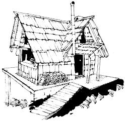
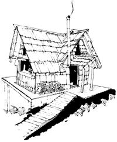

"Shucks. Puttin' up your own house ain't hard at all. What's hard is figuring out and conforming to all those @#$% cents &* building codes and regulations. "
Take heart, all you would-be and actual fabricators of do-it-yourself shelter. At last someone (good old MOTHER) has commissioned a series of articles designed to help you meet-and beat!-those most troublesome of all obstacles in the construction of your own home: THE BUILDING REGULATIONS.
The series of informative pieces (the first of which appears below) was written by Ed Vitale, an attorney who specialized in real estate and building construction during most of his ten years of private practice. So read on as Ed [1] investigates in detail the four major model building codes used in this country, especially as they apply to the activities of the owner-builder, [2] gives you concrete explanations and examples of "how to read the code", [3] reviews the statutory and administrative framework of the construction and sanitary codes of four representative states, and [4] generally lays down criticism, comments, and plain good help for anyone contemplating the construction of his or her own shelter.
This is the individual whom you'll be dealing with when applying for a building permit. He is either characterized as the protector of the public safety or the roadblock that prevented you from building your dream house. He is either the unfeeling, freedom-stifling symbol of governmental bureaucracy and red tape, or the knowledgeable, neighbor-like expert who helped you over some difficult construction problems.
He is all of these things and more. How do you handle him? What approach-a tough "he's working for me" attitude, or a meek, non-questioning stance-should you use in dealing with this man?
Before we answer this question, let's look at the building official (the codes like to call him official instead of inspector) and his powers and ditties as they are outlined in the model building codes:
1. He enforces the code. (Basic Building Code [BBC] § 108.1, National Building Code [NBC] § 4.a of Appendix Q, Standard Building Code [SBC] § 103.1, Uniform Building Code [UBC] § 202[a].) The UBC even says-in § 202(a)-that for the purpose of enforcement, the building inspector has the powers of a police officer . . . it's the only model code that puts it quite so bluntly.
2. He receives the building permit application and issues permits. (BBC § 1 08.2, NBC § 4.a of Appendix Q. SBC § 105 and § 106, and UBC § 301 and § 302.)
3. He issues notices to remove illegal or unsafe conditions. (BBC § 108.3, NBC § 4.a of Appendix Q, SBC § 103.4 . . . and unsafe buildings are declared public nuisances under § 203 of the UBC.)
4. He makes the required inspections of the different stages of your construction to determine whether or not they conform to the code and/or to your previously submitted and approved plans and specifications. (BBC § 108.4, NBC § 4.b of Appendix Q, SBC § 108.2, UBC § 304, One- and Two-Family Dwelling Code [Dwelling Code] § R-111.)
5. He has the right of entry to yourproperty to enforce the code. (BBC § 112, NBC § 7 of Appendix Q, SBC § 103.1, UBC 202 [d]. )
6. He can issue stop-work orders-when construction is unsafe or contrary to the code-which, as the name so aptly states, stops all work oil the project until the infraction is removed. (BBC § 123, NBC & 105.3, SBC § 103.2, UBC § 202[e].)
7, He can revoke permits if false or incorrect information was used to secure them in the first instance. (BBC § 114.6, NBC § 102.10, SBC § 103.3, UBC § 302[e].)
8. He has discretion to approve alternate materials and/or methods of construction. (SBC § 103.6, UBC § 106, Dwelling Code § R-108. Neither the BBC nor the NBC have a similar provision.) This power to approve alternate materials and methods of construction is vital to the owner-builder . . . and a complete discussion of this provision--together with the BBC's variance procedure allowed for prac tical
difficulties-will be featured later in this series. 9. He initiates the necessary legal action to have code violators prosecuted in court. (BBC § 122, NBC § 105.) The SBC or UBC have no specific provisions that designate the building inspector as initiating legal action, but both codes, as well as the other two model regulations, have criminal penalties for violation of their rules.
These are just some of the building inspector's explicitly stated functions. He also, as indicated earlier, decides if your plans and specs are "sufficiently clear", determines the value of your construction so as to set building permit fees, and really determines if your repairs of an existing structure are major enough to require a permit. Under the BBC, he determines matters not provided for in the code (§ 101.3), and can promulgate rules and regulations to interpret and implement the provisions of the code. (The BBC in § 109 and the SBC in § 103.5 are the only model codes that give the building inspector this power.)
Now you know why I stated, in Part Two of this series, that the building inspector is the code! The written word as contained in those rules and regulations gets bended, amended, changed, brought to life, made to fit unusual situations-whatever you want to call it-by what this man says. If he goes "by the book" you may not see the completion of your dwelling for a long time. If he's practical and understanding, your construction experience can be a real joy.
CODE-READING TECHNIQUE: Whenever the building inspector rules against you in some particular, ask him for the specific section upon which he bases his opinion. Read the language of that provision carefully. If it's a section where the conduct of his action is governed by detailed standards, make sure that the building inspector is correct in his interpretation of those standards and correct in the application of the rules that pertain to your project. If, however, the guardian of the code is relying on a provision that gives him discretion, attempt to determine if he's being arbitrary with you. That is, find out if and how he exercised his discretion in a similar situation in the past, and if he is ruling any differently in your particular circumstances. There are ways, which I will discuss later in this series, to appeal the decision of the building inspector.
On a practical, everyday level, the building inspector (as reported by Field and Ventre in their survey of building departments entitled "Local Regulation of Building Agencies, Codes, and Politics" published in the 1977 Municipal Yearbook) has a much more difficult, tenuous existence. Seven out of eight building department heads serve at the pleasure of those who appoint them and this situation makes them sensitive to political pressure and the loss of their jobs. Each inspector, therefore, tries to maintain a "don't rock the boat" attitude which accounts in large measure for the reputation of building departments as being unduly cautious and conservative.
Field and Ventre also document other interesting facts in their survey: [1] that one chief building inspector in seven is over 60 and half are over 50 years of age, [2] that most building officials are in the twilight of their careers, [3] that the local building department appears to be a place where careers end rather than begin, [4] that many building inspectors come from the construction trades, and [5] that heavy dependence on construction experience may be a factor contributing to a building department's tardiness in accommodating new technology.
OK. Now with all that background information under our belt, we'll discuss bow to handle this person whom the codes have almost deified, but whose employment status keeps him on the precipice of the hell of the jobless.
The most important thing to remember is that he is not (inspite of what the codes say) God-like . . . he is a human being with the faults, virtues, and frailties that we all have. He's a not-so-well-paid public official trying to hold onto his job, who-unlike the mayors, councilmen, and other elected officials-is on the firing line with the general public every day . . . and who comes under intense scrutiny and criticism when people are injured or killed in building failures.
So what do you do? There are two overriding points that I would emphasize. [1] Try to find out as much as possible about the PERSON who is the building inspector-what his personality is like, how he treats people, just how flexible or rigid he is-before you meet him. And don't forget that for some owner-builders a confrontation with the building inspector is really a confrontation between two entirely different lifestyles. Try to downplay that aspect of the conflict . . . it will only defeat your purpose. He has more power at his disposal than you do!
[2] Be armed with as much detailed KNOWLEDGE of [A] the building code (which is what this self-help guide is all about), [B] construction in general (which information you cart get from the great number of how-to books on the market), and [C] what you want to build in particular . . . before you meet the inspector for the first time. And, whatever it is you intend to build, make sure you know why the structure is safe . . . this is the most important information that you can confront the building inspector with.
Beyond those two points, I think I call best help you if I briefly present some specific instances of how other owner-builders accomplished what they wanted from the building inspector. Each tale recounted here is as different as the building inspectors each of the following owner-builders faced . . . and different still from the inspector you'll have to face. But the techniques described might get you thinking of how you'll deal with your own situation.
Les Scher, in his book Finding and Buying Your Place in the Country, relates the following confrontation between his friend Paul and a building inspector:
Many people in the country deal with the myriad bureau cratic hassles, permits, and fees by ignoring them and hoping they don't get caught. A good friend of mine named Paul chose the exact opposite tactic in dealing with his local Build ing Inspector, who was one of the toughest I bare met. When Paul bought his place the largest structure on the land was a big beautiful red barn which he wanted to convert into his family dwelling. Because a barn in the eyes of the law is not meant to be a house, many problems were involved in meeting the requirements of the building codes
Knowing in advance that lie would meet the Building In spector sooner or later, Paul went to his office and told him what he was going to do. He drew up .some fairly, sketchy but basic plans, submitted them for approval, and paid the first part of his fees. Then he began to modify the barn and make it his home. The inspector came to make an inspection and then began appearing ant a regular basic. Each lime he hassled Paul about some aspect of his remodeling job until he really got on Paul's nerves. So Paul decided to give him some of his own medicine.
Any time he began a new part of his remodeling, like a new wall, floor, beam, ceiling, ear fireplace, he called up the Build ing Inspector and asked him what kind of materials he should use, how much he should buy, what kinds of nails or cement he should get, and how he should do the job. After several weeks of constant phone calls, the inspector had had enough. In complete exasperation he told Paul, "Dammit, I'm not your architect or contractor. Stop calling and bothering me." Paul then sent in the rest of his fees and never saw the Building Inspector again.
As long as you know that your house is going to have to be built to code and be inspected by omeone who's being paid with your fees, you might as well get your money's worth. Bug the inspector. Maybe he'll leave you alone. If you're way off in the hills, all he really cares about is getting those fees. As long as nobody is going to see your house and complain about it and his job will not be jeopardized, he will probably leave you
alone.
If you don't like the harass and conquer method, you might be interested in Rex Roberts' suggestions (as set forth in his book, Your Engineered House):
Don't fight 'em, join 'em. The more severe the code, the snore lenient the inspector knows he has to be with variations. Your house is going to be loaded with variations, in fact it won't be anything else but.
You are going to be an asset to the community. You have money to spend and will be able to pay taxes Your house as planned will beautify the town, not sully it. You will find that the building inspector is a fine source of information on soil conditions, seasonal ground water changes, prevailing winds, and local sources of good quality lumber. You will find the members of the building appeals board most sympathetic with your ambition to put up a fine, big, handsome house by construction methods of your own choosing.
Don't ever sneak into town and start digging without letting city hall know. City hall will throw the book at you. Smile at city hall, ask its approval, and you'll get it, with growing friendship and a lot of good advice thrown in.
River, in her book Dwelling, recorded some very pertinent conversations with owner-builders and their approach to building inspectors:
Clancy, well-known builder of code and non-code dwellings, says:
"As a builder, I can't help asking the inspector lots of questions he'll have to look up, or questions he just doesn't know about. Then you can help him out by changing the subject. After a time you'll be leaning on the table saying, 'what if I do this?'and he'll be saying, 'I don't
know. . . ' " Fil Lewitt: "My initial encounter with the inspector went like this: He drove his truck through my property-there was no gate at the time. There he was, right in the middle of the yard. I was building the cabin and he said, 'What are you doing?' and I said, 'I'm building.' He said, 'Yo it need a permit for that.' And I said, 'You've got to be kidding.'He said, 'No, but well just consider that you didn't know. 'So I went in and got a permit to build a studio. And then turned the building into what I wanted. That was the only time they came to the farm. The barn was built before they changed the rules: Now, anything over $100 needs a permit-which is everything.
I only got mad once. The inspector carne in the gate and Barbara met him. He said he wanted to take a look around. Barbara told him he'd have to come back when the owner was there. Angry, I called the inspector and said 'As far as I'm concerned, you're working for me, not the other way around' He said he had a complaint about a non-code building and that he could legally check on it any time during business hours. I said, 'The hell you cart! Don't come unless you make an appointment.' So my advice is, deal with the building inspector as quickly and efficiently as possible. Never be obsequious. I called them and told them to stay out of the farm unless they were invited in. Nobody can appear at the farm without calling me. Since that call, no one has come.
'It's not that anyone wins or loses. It's just that you have to descend into that game level in order to deal with them. You're jousting with each other. It is interesting to learn that the former head of the building department is now selling Challenger Homes. . . "
And speaking of women, Alex Wade's approach (in his chapter "Some Problems to Overcome" in the book Low-Cost, Energy-Efficient Shelter for the Owner-Builder) to the building inspector presents a neat twist any woman or family can use:
Do your homework carefully before approaching the inspector. Try to locate someone who has dealt with him to find out what he is like. It might also pay to have a friend test the waters by going in and asking questions concerning a mythical small house in another part of town. Friendsof mine have used another technique very successfully. Since the husband has a fulltime job, his wife has done a great deal of the work on bout their new homes. Upon finding out that they were faced with a notoriously difficult building inspector, thewife spent several weeks boning up on construction details (for post and beam construction) and confronted the building inspector herself. Dealing with a woman who was knowledgeable on construction matters was such a novel experience that the building inspector was too flustered to be nasty . . . . Finally, remember that you are dealing with a bureaucrat who is near the bottomof the ladder. He needs to feel important. Flatter him, ask his advice. Also bear in mind that it is your tax dollars that are paying his salary, and he is there to serve you . . . . Try always to be reasonable and cooperative, as frequently the mood is contagious.
Excerpts from and references to the following books are reprinted by permission of the publishers:
The BOCA Basic Building Code/ 1975, copyright 1975 by Building Officials and Code Administrators International, Inc., 1313 East 60th St., Chicago, III. 60637 (Cost: $12.50).
Standard Building Code, copyright 1976 by Southern Building Code Congress International, Inc., 3617 Eighth Ave. South, Birmingham, Ala. 35222 (Cost: $14.00).
Uniform Building Code, copyright 1973, together with 1975 Accumulative Supplement, copyright 1975, by International Conference of Building Officials, 5360 S. Workman Mill Rd., Whither, Calif. 90601 (Cost: $14.00).
One- and Two-Family Dwelling Code, 1975 Edition, published by all, and available from
any, of the four model code groups listed here (Cost: $8.00).
Dwelling, by River (quotes are taken from pages 158-.159), copyright 1974 by Freestone Publishing Co-, Box 357, Albion, Calif. 95410 (Cost: $5.00).
Finding and Buying Your Place in the Country, by Les Scher (quote is taken from pages 158-159), copyright 1974 by Les Scher, published by Collier Books, a Division of MacMillan Publishing Co. Inc., 866 Third Ave., New York, N.Y. 10022 (Cost: $6.95).
Low-Cost, Energy-Efficient Shelter for the Owner-Builder, edited by Eugene Eccli (quote is taken from pages 33-34), copyright 1976 by Eugene Eccli, published by Rodale Press, Inc., Emmaus, Pa. 18049 (Cost: S5.95).
Your Engineered House, by Rex Roberts (quote is taken from page 97), copyright 1964 by Rex Roberts, published by M. Evans and Company, Inc., 216 E. 49th St., New York, N. Y. 10017 (Cost: $4.95).
"Local Regulation of Building: Agencies, Codes, and Politics" by Charles G. Field and Frank T. Ventre, in the 1971 Municipal Yearbook, copyright 1971 by the International City Management Association, 1140 Connecticut Ave. N.W., Washington, D.C. 20036 (Cost: $15.00 or available at your library).
Other useful sources are:
National Building Code, 1976, recommended by the American Insurance Association, Engineering and Safety Service, 85 John St., New York, N.Y. 10038 (Cost: $6.00).
Codes and Code Administration: An Introduction to Building Regulations in the United States, by Richard L. Sanderson, copyright 1969 by Building Officials Conference of America, Inc., 1313 E. 60th St., Chicago, III, 60637 (Cost: $11.00).
Readings in Code Administration, Vol. 1, edited by Richard L. Sanderson, copyright 1974 by Building Officials and Code Administrators International, Inc., 1313 E. 60th St., Chicago, III. 60637 (Cost: $12.00).
|
 A successful owner-builder of his own house |
 |
|